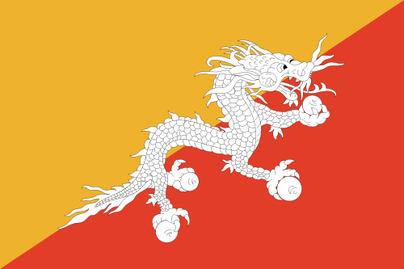

Bhutan is a country in South Asia situated between China and India. Located near the Himalayan Mountains it gets its name, Druk Yul, or Land of the Thunder Dragon, from the violent storms and landslides that frequent the area. The national symbol is a thunder dragon known as Druk, which also appears on the Bhutanese flag.
Bhutan is a small country, only 14,824 square miles with a population of about 700,000. The official language is Dzongkha, however English is used in throughout the country in addition to other Tibetan languages. The official religion for the country is Vajrayana Buddhism, the second largest religion in the country being Hinduism. The capital of Bhutan is a city called Thimphu, with Thimphu also being one of the twenty administrative districts that make up Bhutan. The country is completely landlocked, with mountainous terrain, and climates varying from humid and subtropical, temperate near the valleys, to cold near the Himalayan peaks.
Bhutan’s history goes back to the 17th century when a Tibetan solidified the local warring factions. Bhutan became a monarchy under the Wangchuck family in 1907 when the first king, Ugyen Wangchuck, was enthroned. In present times Bhutan is a constitutional monarchy where Gross Domestic Happiness (GDH) is used to measure the quality of life of the citizens. In 2006 Business Week ranked Bhutan the 8th happiest place in the world.1

The Flag of Bhutan
1 Kemenev, Marina. 2006. "The World's Happiest Countries." Business Week. Retrieved September 2012.

Click here to learn more.